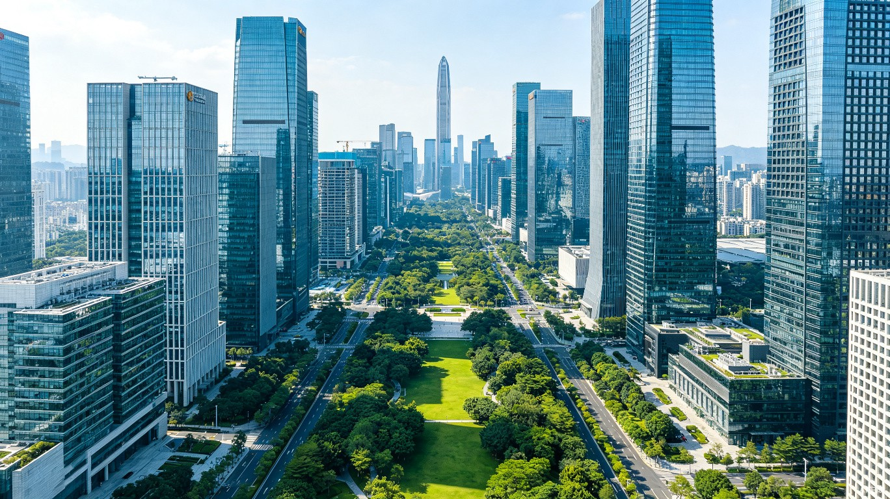
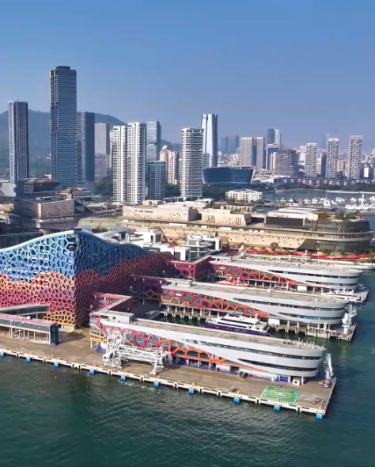

Shenzhen Isn't What You Think
The cliché is familiar by now: Shenzhen, the “Silicon Valley of China.” The reality is far more interesting. This is a city of contradictions — a place where you can buy any electronic component ever manufactured in a single sprawling market, then hike through subtropical forest to a pristine beach forty-five minutes away. Where a 600-year-old Hakka fortress stands in the shadow of a $50 billion tech company’s headquarters. Where the city’s oldest neighborhood started it all in 1980 with a handful of fishing villages, and today 17 million people live in a metropolis that didn’t exist in most atlases when their parents were born.
Shenzhen confounds expectations at every turn. The following guide is written for APEC delegates — not tourists, not investors, but visitors who have a few days to understand what makes this city unlike anywhere else on Earth.
As an APEC delegate, you’ll arrive at a moment when the city is preparing to welcome the world. Roads are being resurfaced, hotel staff are rehearsing multilingual protocols, and the convention center is being fitted with the kind of security infrastructure that only a heads-of-state summit demands. But beyond the summit perimeter, the real Shenzhen — the one that exists before and after the diplomats leave — is what this guide is about.
The APEC Delegate’s Shenzhen
Futian — Where You’ll Spend Most of Your Time
The convention center sits in the heart of Futian, surrounded by luxury hotels and the kind of manicured corporate landscaping that makes every district in Asia feel interchangeable. But step outside the conference perimeter and the city begins to reveal itself. The Civic Center is a short walk away — a massive glass-and-steel building shaped like a giant eye that overlooks a public square with choreographed music fountain shows running every evening. The Shenzhen Library next door is an architectural statement in its own right: a building shaped like open books, deliberately designed to signal that this city values knowledge as much as commerce.
Walk ten minutes south from the Civic Center and you hit MixC, the city’s premier shopping mall, built around an indoor canal where families feed koi fish between visits to Louis Vuitton and Tesla. The Shenzhen Museum, also in the Civic Center complex, tells the remarkable story of the city’s 45-year transformation from fishing villages to global metropolis. Admission is free. Closed Mondays. Budget an hour; you’ll stay two.
This is also where APEC’s main events will unfold. The Shenzhen Convention and Exhibition Center, a few blocks east, will host the Economic Leaders’ Meeting and CEO Summit — but Futian’s restaurants, parks, and cultural venues are what delegates will remember long after the declarations are signed. For the full APEC program and venue details, see the APEC Guide.

Nanshan — Where the Ideas Happen
This is Shenzhen’s brain. Tencent’s Seafront Towers rise above Shenzhen Bay like twin sailboats frozen mid-race. DJI’s global headquarters, a campus of interconnected sky-bridges and glass cubes, sits a few kilometers west. Huawei’s Shenzhen campus, with its European-village-inspired architecture, sprawls across the northern reaches of the district. Together, these three companies alone generate more patent applications annually than most countries.
But Nanshan also has a soul, and its name is Shekou. This waterfront district is where Shenzhen’s modernization began in earnest — the site of China’s first duty-free shop, its first McDonald’s, its first joint-venture factory. Today Shekou is Shenzhen’s most international neighborhood, the kind of place where you can grab a flat white at a Australian-owned cafe, browse contemporary art at the Sea World Culture and Arts Center (designed by Pritzker Prize-winner Fumihiko Maki), and end the evening at a craft brewery run by a British expat who came for a six-month contract and stayed eight years. The Maki building alone is worth a 30-minute detour: its interlocking mountain-like forms house rotating exhibitions and the kind of panoramic bay views that remind you this city has a coastline as well as a skyline.
Shekou expat service centre — the heart of Shenzhen’s international community.
Luohu — The Crossing Point
This is where Shenzhen meets Hong Kong, and the friction between the two is palpable in the best possible way. The Luohu Port border crossing handles a quarter of a million people daily — executives, tourists, traders, grandparents visiting grandchildren. Before you reach the border, though, explore Dongmen Pedestrian Street, a sensory overload of street food stalls, bubble tea shops competing for attention with LED signs, clothing stores stacked four to a building, and the kind of chaotic, joyful commerce that makes Chinese markets irresistible. The Shuibei Gold Market nearby is the largest gold and jewelry trading hub in China, where you can watch artisans work on custom pieces while haggling over 24-karat chains.
Luohu is older than the rest of Shenzhen, and it shows — not as decay, but as texture. The street food here is the real deal: skewers of lamb dusted with cumin, octopus tentacles grilled over charcoal, egg waffles (gai daan jai) crisp on the outside and chewy within. Come hungry. Come before 10 p.m., when the best stalls start to close.

The Luohu border crossing — where Shenzhen meets Hong Kong.
A City That Eats Seriously
Guangdong is China’s culinary heartland, and Shenzhen sits squarely in its pantry. Cantonese food is built on a principle that sounds simple but takes generations to master: freshness. Ingredients are sourced daily, often hours before they reach your table. The cooking technique that defines the cuisine is wok hei — literally “breath of the wok” — the smoky, caramelized flavor that only appears when a seasoned chef works a carbon-steel wok over a roaring gas flame at temperatures above 1,200 degrees Celsius. It’s the magic that turns a handful of spring onions, ginger, and soy sauce into something extraordinary.
The dim sum tradition is not merely food; it is a social institution. In Guangdong, business deals are struck over dim sum. Families gather every Sunday for yum cha — literally “drinking tea” — a ritual that can last three hours and involve twenty or thirty small plates. The experience is tactile and unhurried: bamboo baskets of translucent har gow (shrimp dumplings) arriving clouds of steam, char siu bao with their golden tops splitting open to reveal sweet barbecue pork inside, cheong fun (rice noodle rolls) glistening with sweet soy sauce on a porcelain plate. There is no rush. The tea flows, the conversation wanders, and the food keeps coming.
In Cantonese culture, the table is where trust is built. The dim sum restaurant is the boardroom, the family room, and the town square, all at once.
For APEC delegates based in Futian, the good news is that the CBD has several outstanding Cantonese restaurants inside the luxury hotels — the Four Seasons, Ritz-Carlton, and Shangri-La all house kitchens that would hold their own in Hong Kong. For a more authentic experience, take a fifteen-minute taxi to Luohu’s Dongmen, where the street food is the real deal and a bowl of wonton noodles costs less than the hotel’s tea service. Seek out Yue Loong for roast goose — the crisp, lacquered skin and deeply flavored meat represent a Guangdong tradition that predates Shenzhen itself. Order the claypot rice if it’s available: it arrives sizzling, with a caramelized crust of rice at the bottom of the pot that the locals fight over. And don’t overlook the seafood. Shenzhen’s coastal waters supply Dapeng Bay, and much of the city’s seafood arrives at the restaurant that morning, still moving.
For visa details, payment setup, and hotel recommendations, see the Plan Your Visit page — especially the section on mobile payments, which you’ll need before attempting that Dongmen street-food run.
The Unexpected Green Side
Foreign visitors are always surprised by how green Shenzhen is. The city has more parks per capita than any major Chinese city — over 1,200 parks and 2,400 kilometers of greenways threading through the urban fabric. This is not a city that happens to have some parks; it is a city that has decided, at a policy level, to be a forest with skyscrapers in it.
Shenzhen Bay Park
A 13-kilometer coastal greenway where you can watch black-faced spoonbills — an endangered species with fewer than 5,000 remaining in the wild — feeding in the mudflats while joggers pass by and the Shenzhen Bay Bridge stretches toward Hong Kong on the horizon. On winter mornings, the birdwatching here is genuinely world-class.
Wutong Mountain
At 943 meters, Wutong is the city’s highest point and a genuinely challenging four-hour hike through subtropical forest. The reward at the top is a panorama that stretches to Hong Kong on clear days, with the entire Pearl River Delta spread below like a circuit board. Most delegates won’t attempt the summit, but even the lower trails offer a green escape that feels continents away from the convention center.
Mangrove Nature Reserve
One of the smallest nature reserves in China, but critically important: this is the last piece of coastal mangrove forest in Shenzhen, and a crucial stop on the East Asian-Australasian flyway for migratory birds. Boardwalk trails wind through the canopy, and an observation station overlooks mudflats where, in season, you can see dozens of species in a single morning. It is also, remarkably, within walking distance of the Futian CBD.
Continue your journey
Prepare for Your Trip
Transportation, hotels, weather, visa details, and practical tips for your Shenzhen visit.
Plan Your Visit